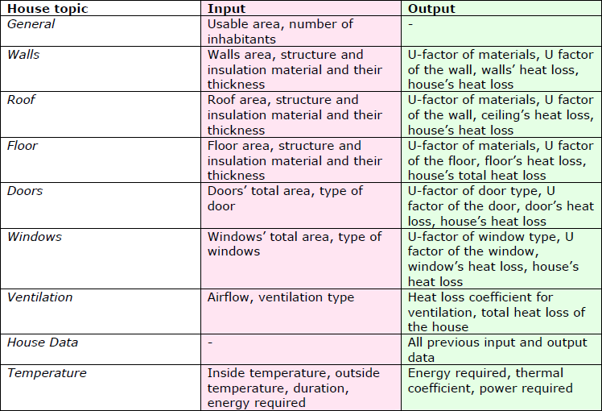

With the house thermal simulation you can explore how to build an energy- and CO2-friendly building. You can change basic parameters of the house and see how it influences the heat loss coefficient of the house. The simulation interface consists of three parts:
1)a house animation,
2)data inputs and outputs,
3)a graphical visualization (representation of data).
The data part consists of basic house topics (General, Walls, Roof, Floor, Doors, Windows, Ventilation, House Data and Temperature). You can manipulate with input values of each topic and see the numerical results and graphical outcome of the changes.
In order to facilitate navigation in simulation, all the input parameters are marked as pink ones and the output values have green background color.
• Choose input values (wall area, structure material, etc.)
• Look at the results. On the graphical visualization you can see heat loss coefficient for each part of the house. If you change the input values of the house, the changes will be instantly visible on the graph.
• You can change the input values one at a time without resetting all the data.
• If you still want to delete all the inserted data and start again with starting values, you can easily reset all the values by clicking on the button “Reset” in the topic House Data and enter new numbers.
• The topic House Data gives you full overview of all input and output data of the house.
Although the house thermal simulation is simplified and all influencing factors are not taken into account, it still gives you a basic overview of building a thermally efficient house.
NB! Remember, there are also limitations in input values to prevent simulating unrealistic houses.